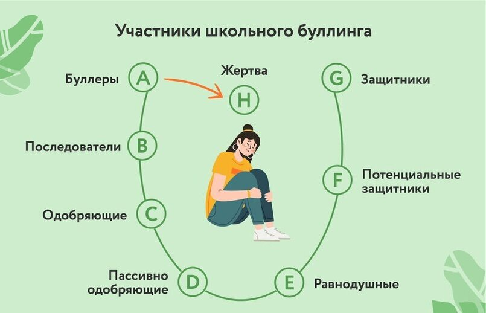
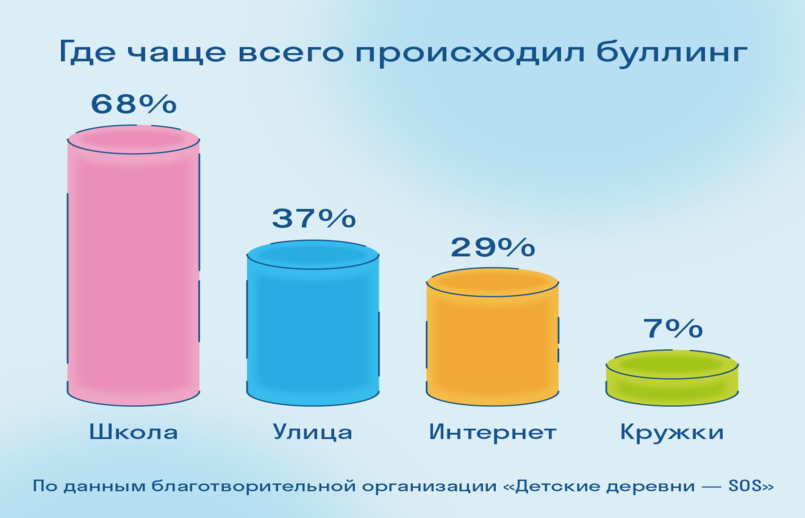
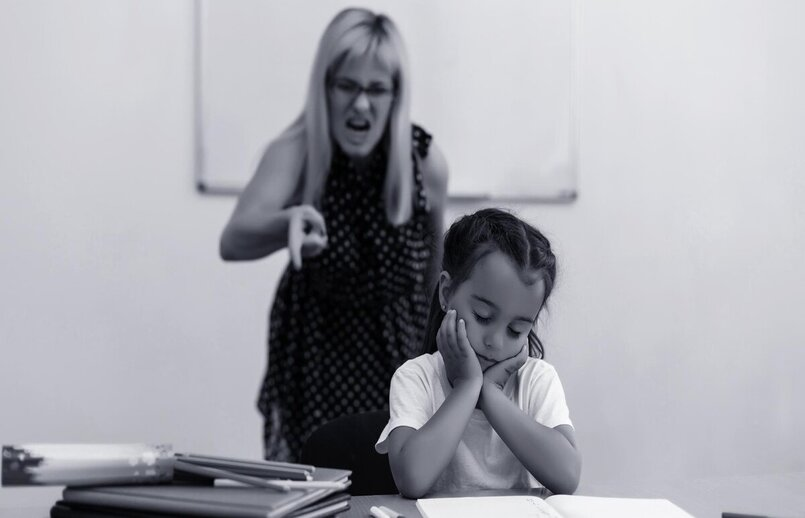

Рабочее времяПонедельник - Пятница: 8 утра - 7 вечера
Местоположение:Нижегородская область, п Сосновское, ул Нижегородская, д 4
Рабочее времяПонедельник - Пятница: 8 утра - 7 вечера
Местоположение:Нижегородская область, п Сосновское, ул Нижегородская, д 4
Цель агрессоров — не один раз обидеть жертву, а изводить её системно, поэтому они выбирают непрямые формы агрессии, чаще всего — психологическое унижение, например:
И жертвой, и инициатором может стать любой ребенок. Жертвы школьной травли, как правило, чувствительны, тревожны, склонны к слезам, слабы физически, у них низкая самооценка, мало друзей, и они предпочитают проводить время со взрослыми.
Чаще всего предметом буллинга является физический недостаток, необычная внешность и так далее. В группу риска попадают дети с трудностями в обучении, неумением заводить друзей, расстройствами аутистического спектра, больные диабетом, с нарушениями веса и другими заболеваниями. Как правило, социальный статус здесь не имеет значения.
Преследователи — это подростки с жаждой самоутверждения, власти. Они хорошо распознают чужие эмоции и успешно манипулируют другими людьми. Такое поведение связано с духовно-нравственным развитием личности ребенка, которое формируется, прежде всего, в семье. Модель поведения и способы коммуницирования формируют именно родители. Когда же ребенок подрастает, он осознанно подходит к выбору модели поведения. Очень часто агрессор на самом деле очень не уверен в себе, и его поведение является лишь механизмом защиты внутренней слабости и низкой самооценки.
Здесь важно разделять понятия повода и причины для буллинга. Первый — лишь крючок, за который цепляется человек, который уже внутренне заинтересован в травле другого. Такими поводами могут быть любые детали. Главное — они должны выделять жертву на фоне всех остальных в коллективе:
Это только малая часть поводов, но на самом деле они не важны. Они — всего лишь отговорка для отвода глаз. Другое дело — настоящие причины, почему буллеры становятся буллерами.
Буллинг в школе разделяет его участников на три группы. Первая страдает от насилия, вторая – разжигает ненависть к жертве, самоутверждается, развлекается. К группе «страдающих» относятся не только жертвы, но и свидетели (третья группа). Они переживают вторичные эффекты насилия, живут с напряжением, опасением того, что травля будет обращена на них. Таким образом, группа состоит из трех ролей: преследователи, свидетели, жертвы.
За травлей всегда стоит физическое неравенство и/или особое положение в референтной группе. Инициаторами агрессии становятся ученики, занимающие крайнее статусное положение: самые популярные либо отверженные. Последние могут собрать вокруг себя «поддержку» из таких же изгоев. Роль жертвы присваивается отверженным либо изолированным ученикам. Буллинг в школе может рассматриваться как механизм проживания негативных эмоций (тревоги, дискомфорта) и как способ самоидентификации, в ходе которой ученики получают представление о своем положении в социальной группе.

Буллинг в школе вызывает тяжелые психологические травмы у детей, ставших жертвами. Негативные последствия разнообразны: неуважение к себе, неспособность достичь успехов, нарушения сна. Вынужденная социальная изоляция, переживание одиночества становятся причинами затяжной депрессии, растягивающейся во взрослую жизнь. Возможно развитие панических атак, социофобии, психосоматических заболеваний. Снижение учебной мотивации приводит к прогулам уроков, уходу из школы в онлайн-образование. Травля – одна из наиболее распространенных причин самоубийств.

Иногда жертвами травли становятся те, кого попросту буллят родители/опекуны в домашней обстановке. Унижая ребёнка, они подавляют его моральное состояние и собственную самооценку, чем и могут пользоваться другие буллеры.
Самые распространенные формы домашнего буллинга: «Можно было и лучше», «А вот сын тети Кати», «Не придумывай», «Тебе показалось», «Ты делаешь все, чтобы довести меня до инфаркта» − домашний буллинг может принимать самые разные виды и формы. Какие-то из них − «ради блага ребенка», другие − откровенно про несправедливость и агрессию.
Нездоровая атмосфера в семье отражается на всех сферах жизни ребенка. На родительском примере он строит отношения с окружающим миром. Если нет других примеров, он тоже начинает взаимодействовать с миром через насилие и буллинг.
Дом должен быть самым безопасным местом в жизни ребенка, но в случае с буллингом - он становится угрозой. Жертве семейной травли не хочется идти домой, поэтому он пропадает у друзей или на кружках. Дома же старается быть максимально незаметным и удобным, поэтому делает все, что ему говорят.
Единственное, о чем они мечтают, — поскорее вырваться из этой атмосферы. Девушки, которых систематически травили домашние, рано выходят замуж, часто за первого встречного, и попадают в абьюзивные отношения. Юноши связываются с плохими компаниями или убегают из дома.

Ещё одной важной причиной травли человека, на которую очень важно обратить внимание − буллинг со стороны преподавателя/руководителя в коллективе. Человек, который является во главе коллектива подаёт своим учащимся/подчинённым пример, за которым соответственно следуют его подопечные.
Будучи преподавателем в учебном заведении или же начальником на работе, выделяя одного человека от остальных в негативном ключе в присутствии других – воспроизводит плохой пример для окружающих, и создаёт поводы/причины для буллинга уже со стороны коллектива или же учеников/студентов.
Буллинг со стороны взрослого говорит о выгорании педагога и/или его непрофессионализме. В любом случае такой учитель не должен работать с детьми, пока не решит свои психологические проблемы. Такая же ответственность лежит и на плечах руководителей организаций.
Отнеситесь к этому серьезно. Травля — это большая проблема, которая может обостриться и нанести человеку серьезный вред, как эмоциональный, так и физический, если ее не прекратить. Отнеситесь серьезно к любой травле, о которой услышите. Возможно, вам придется привлечь полицию или обратиться за медицинской помощью для человека, если:
Используйте сарказм. Если вы относитесь к тому типу людей, которые хотят высказаться, то использование сарказма - один из возможных способов справиться с ситуацией издевательств, будь то онлайн или лично. Придумывание саркастической реплики в ответ на насмешку может быть способом почувствовать, что вы получаете некоторый контроль над ситуацией. Юмор может застать хулигана врасплох. Если вы скажете хулигану что-то смешное, его могут обезоружить ваши слова, и он не будет знать, как реагировать.
Родители ребёнка-жертвы испытывают чувство вины, стыда, гнева, боли и бессилия. Из-за этого иногда вместо поддержки и сочувствия обрушиваются на него с советами и обвинениями: «Что же ты не дал сдачи?!», «Не будь тряпкой!», «Сам виноват» и так далее.
Важно понять, что это может случиться с любой семьёй. Здесь никто не виноват, особенно сам ребёнок. Если вы чувствуете, что как родитель не справляетесь с ситуацией (а это нормально), то прежде всего нужно самому получить поддержку близких или психолога.
Вот фразы, которые помогут вам начать диалог:
Старайтесь всегда поддерживать с детьми доверительные отношения, чтобы они смогли вовремя попросить о помощи.
В процессе выполнения индивидуального проекта по теме «Как защититься от буллинга», я ознакомилась с информацией на интернет ресурсах и публикаций психологов. Отталкиваясь от изученного материала составила проблемную ситуацию, разработала цель и поставила необходимые задачи. Также привела анализ статистики детей России, которые хоть раз сталкивались с буллингом в своём окружении. При выполнении задач в проекте ─ я раскрыла значение буллинга, признаки, причины появления, типы, и последствия его появления. Для нуждающихся детей и их родителей были сформулированы рекомендации с советами «Как действовать». Проект загружен на онлайн ресурс учебного заведения и доступен всем желающим к ознакомлению.